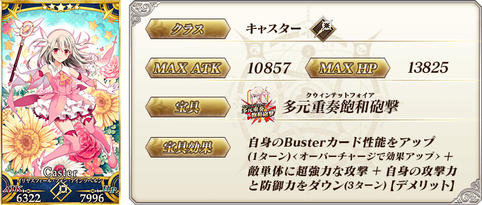
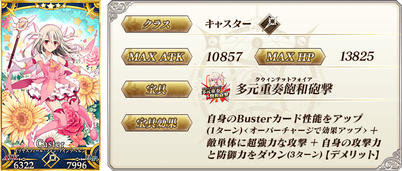
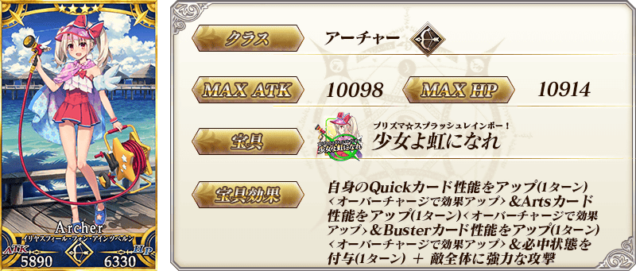
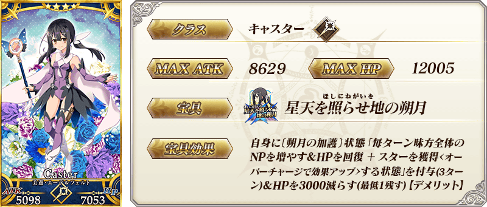
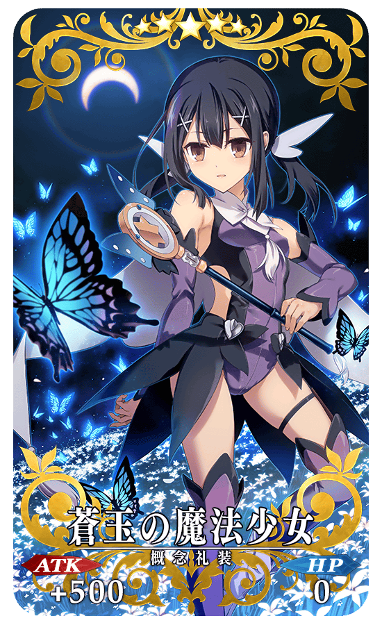
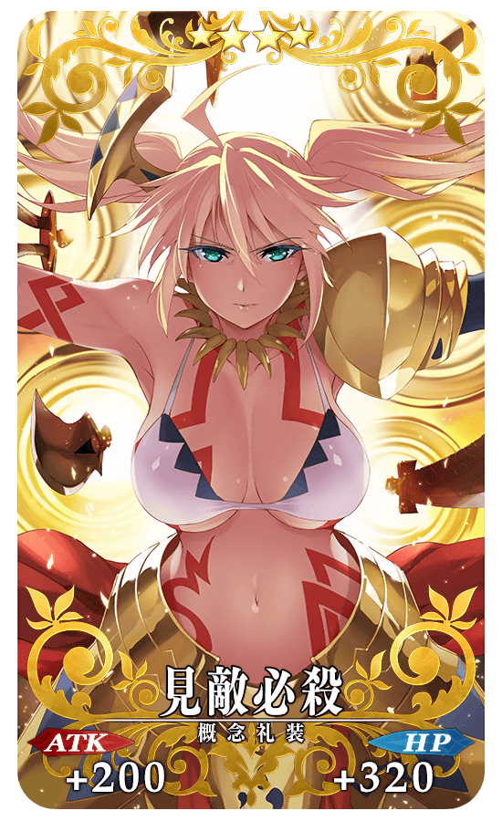
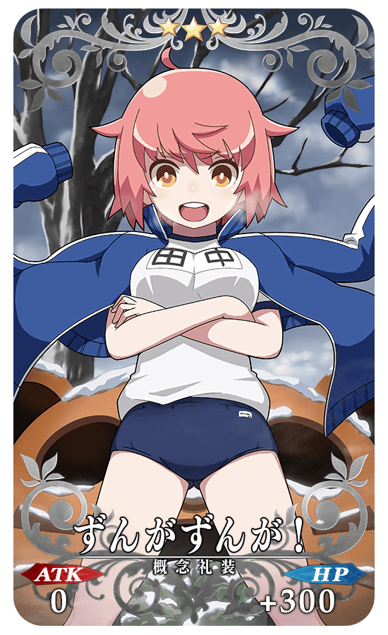
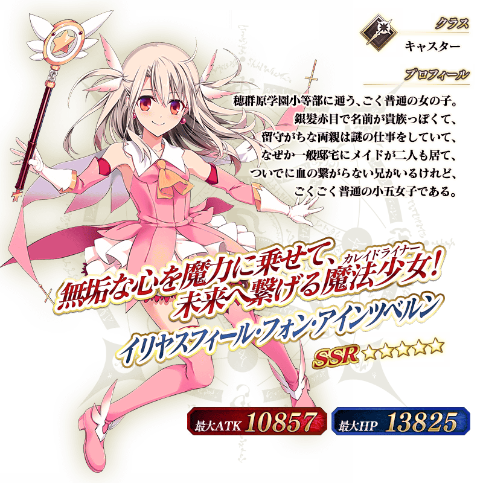
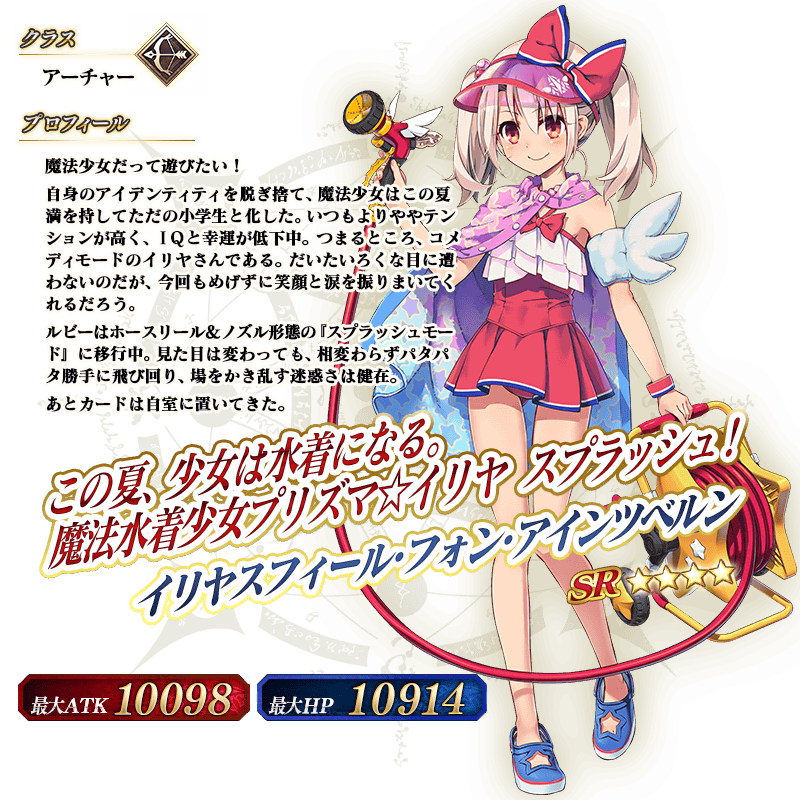
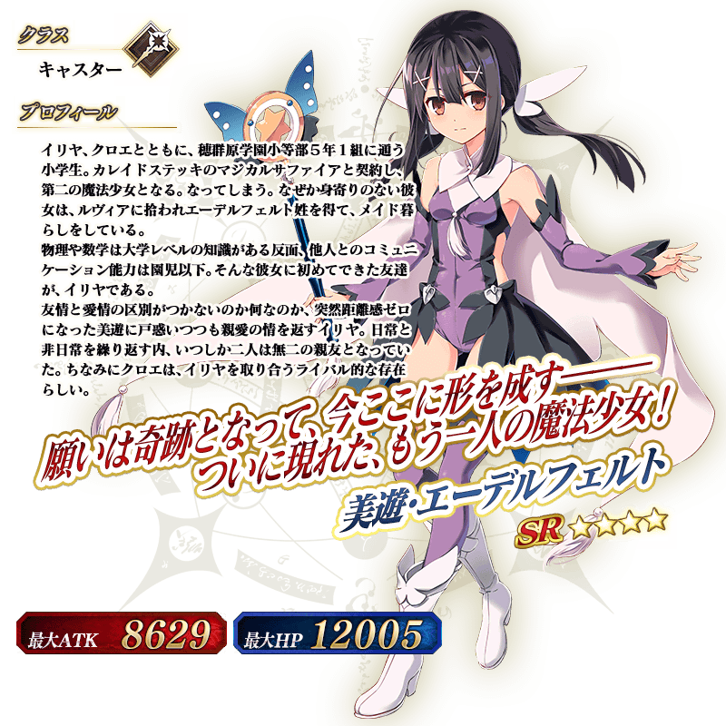

◆『「劇場版 Fate/kaleid liner 魔法少女☆伊莉雅 Licht 無名少女」上映記念Pick Up召喚(每日交替)』期間◆
期間:2021年8月27日(五) 17:00～9月10日(五) 11:59
為了記念「劇場版 Fate/kaleid liner 魔法少女☆伊莉雅 Licht 無名少女」的上映，3位期間限定從者與2017年的『「劇場版魔法少女☆伊莉雅 雪下的誓言」上映記念Pick Up召喚』中登場的3種期間限定概念禮裝Pick Up！
▼期間限定從者
【常駐Pick Up】
・★5(SSR)伊莉雅絲菲爾・馮・愛因茲貝倫(Caster)
【每日交替Pick Up(對象日的み召喚可能)】 ・★4(SR)伊莉雅絲菲爾・馮・愛因茲貝倫(Archer) ・★4(SR)美遊・艾蒂菲爾特
▼期間限定概念禮裝
【常駐Pick Up】
・★5(SSR)蒼玉の魔法少女
・★4(SR)見敵必殺
・★3(R)ずんがずんが！
Pick Up期間中，Pick Up對象從者與概念禮裝的出現機率提升！
詳情請在聖晶石召喚畫面左下的召喚詳細確認。
11次召喚中確定1張★4(SR)以上和確定1位★3(R)以上的從者！ ※確定★4(SR)以上包含從者和概念禮裝。
■關於1天1次限定的有償聖晶石召喚
自2021年8月1日(日) 18:00，變得可以1天1次限定於期間限定召喚用有償聖晶石1個進行「1次召喚」。
※透過有償聖晶石1個的「1次召喚」，每天3:00重置。
※透過有償聖晶石1個的「1次召喚」對應的聖晶石召喚有好幾個的情況，各個召喚中1天各進行1次有償聖晶石1個的「1次召喚」。
※請注意就算進行透過有償聖晶石1個的「1次召喚」，不包含在1次獎勵的計算。
※如「福袋召喚」只能「11次召喚」的期間限定召喚中無法進行用有償聖晶石1個的「1次召喚」。
※「故事召喚」中無法進行用有償聖晶石1個的「1次召喚」。
※聖晶石購入時賦予的「附贈(オマケ)」是做為無償聖晶石而不包含在有償聖晶石的個數，請注意別搞錯。另外，持有聖晶石的細項，可從持有道具一覧確認。
■關於透過召喚獲得從者硬幣
自2021年8月1日(日) 18:00，在期間限定召喚、故事召喚、友情點數召喚中入手從者時，變得可獲得該從者的從者硬幣。
※透過期間限定活動和Main Interlude、於達文西工房的「稀有稜鏡交換」關卡開放權所開放的關卡報酬而加入的限定從者，無法獲得從者硬幣。 ※關於活動限定從者的從者硬幣，今後預定會實裝別的獲得方法。 ※透過無記名靈基和宣傳活動交換從者讓從者加入的情況也可獲得從者硬幣。
◆有關從者的注意◆
※請注意本召喚做為每日交替，下述的從者就算舉辦期間中也有不會被抽出來的日子。
・★4(SR)伊莉雅絲菲爾・馮・愛因茲貝倫(Archer)
・★4(SR)美遊・艾蒂菲爾特
※下述的從者在Pick Up期間結束後不會追加到故事召喚。
・★5(SSR)伊莉雅絲菲爾・馮・愛因茲貝倫(Caster)
・★4(SR)伊莉雅絲菲爾・馮・愛因茲貝倫(Archer)
・★4(SR)美遊・艾蒂菲爾特
◆有關概念禮裝的注意◆
※下述的概念禮裝，Pick Up期間中也能靠友情點數召喚獲得。
・★3(R)ずんがずんが！
※在自動變還設定登錄★3(R)概念禮裝的情況，下述的概念禮裝會變成自動變還的對象。
・★3(R)ずんがずんが！
◆『「劇場版 Fate/kaleid liner 魔法少女☆伊莉雅 Licht 無名少女」上映記念Pick Up召喚(每日交替)』Pick Up內容◆
| Pick Up期間 | Pick Up內容 | |||
|---|---|---|---|---|
| 全天Pick Up | 每日交替Pick Up | |||
|
8/27(五) 17:00～ 8/29(日) 22:59 |
期間限定從者 ★5 伊莉雅絲菲爾・馮・愛因茲貝倫(Caster) |
期間限定從者
★4 伊莉雅絲菲爾・馮・愛因茲貝倫(Archer)
|
||
|
期間限定從者
★4 美遊・艾蒂菲爾特
|
||||
|
8/29(日) 23:00～ 9/1(三) 22:59 |
期間限定從者
★4 美遊・艾蒂菲爾特
|
|||
|
9/1(三) 23:00～ 9/4(六) 22:59 |
期間限定從者
★4 伊莉雅絲菲爾・馮・愛因茲貝倫(Archer)
|
|||
| 9/4(六) 23:00～9/5(日) 22:59 |
期間限定從者
★4 伊莉雅絲菲爾・馮・愛因茲貝倫(Archer)
|
|||
|
期間限定從者
★4 美遊・艾蒂菲爾特
|
||||
|
9/5(日) 23:00～ 9/7(二) 22:59 |
期間限定從者
★4 美遊・艾蒂菲爾特
|
|||
|
9/7(二) 23:00～ 9/9(四) 22:59 |
期間限定從者
★4 伊莉雅絲菲爾・馮・愛因茲貝倫(Archer)
|
|||
| 9/9(四) 23:00～9/10(五) 11:59 |
期間限定從者
★4 伊莉雅絲菲爾・馮・愛因茲貝倫(Archer)
|
|||
|
期間限定從者
★4 美遊・艾蒂菲爾特
|
||||
※請注意會以每日交替變更Pick Up的從者。
 
※上述「★5(SSR)伊莉雅絲菲爾・馮・愛因茲貝倫(Caster)」的卡面為靈基再臨第1階段。

※上述「★5(SSR)伊莉雅絲菲爾・馮・愛因茲貝倫(Caster)」的卡面為靈基再臨第1階段。
 ※上述「★4(SR)伊莉雅絲菲爾・馮・愛因茲貝倫(Archer)」的卡面為靈基再臨第1階段。
 ※上述「★4(SR)美遊・艾蒂菲爾特」的卡面為靈基再臨第1階段。
|  |
★★★★★SSR |
|  |
★★★★SR |
|  |
★★★R |
 ※上述「★5(SSR)伊莉雅絲菲爾・馮・愛因茲貝倫(Caster)」的立繪為靈基再臨第1階段。
 ※上述「★4(SR)伊莉雅絲菲爾・馮・愛因茲貝倫(Archer)」的立繪為靈基再臨第1階段。
 ※上述「★4(SR)美遊・艾蒂菲爾特」的立繪為靈基再臨第1階段。

在2019年舉辦的聯動活動「復刻版:魔法少女紀行 ～Prisma・Codes～ -Re-install-」登場，「★5(SSR)伊莉雅絲菲爾・馮・愛因茲貝倫(Caster)」的簡易靈衣「テスタメント・フォーム」開放權在達文西工房的「靈衣縫製」追加！
用稀有稜鏡2個交換後，可入手上述靈衣開放權。
想靈衣開放的話，除了靈衣開放權外再加上必須滿足一些開放條件。
◆追加時間◆
2021年8月27日(五) 17:00～
◆交換條件◆
滿足以下條件的御主才能交換
・通過「特異點F 炎上汙染都市 冬木」
・未入手簡易靈衣「テスタメント・フォーム」開放權
※在「靈衣縫製」追加的簡易靈衣「テスタメント・フォーム」開放權為永久，沒有交換期限。 ※關於已經取得交換對象靈衣開放權的玩家，無法交換。
◆有關靈衣開放權的注意◆ ※本次追加的「★5(SSR)伊莉雅絲菲爾・馮・愛因茲貝倫(Caster)」的靈衣是只有外觀的變化，語音沒變化的「簡易靈衣」。 ※請注意未持有「★5(SSR)伊莉雅絲菲爾・馮・愛因茲貝倫」的情況，可入手靈衣開放權，但無法進行靈衣開放。
◆追加道具(永久)◆
| 追加道具 | 能交換次數 | 1次交換所需的 稀有稜鏡數 |
|---|---|---|
| 簡易靈衣「テスタメント・フォーム」開放權 | 1次 | 2個 |


「靈衣開放」是自強化畫面進行。
※「靈衣開放」後自動切換戰鬥角色和圖示。若想回到「靈衣開放」前的狀態和變成其他再臨階段的情況，可自從者詳細畫面變更。 ※就算「靈衣開放」也不會讓職階和能力等有所變化。

介紹開放簡易靈衣「テスタメント・フォーム」的「★5(SSR)伊莉雅絲菲爾・馮・愛因茲貝倫(Caster)」寶具演出！
介紹在本召喚Pick Up的3位從者寶具演出！
「★4(SR)美遊・艾蒂菲爾特」的寶具演出於一部份裝置有對應全螢幕顯示。
【★5(SSR)伊莉雅絲菲爾・馮・愛因茲貝倫(Caster)】
【★4(SR)伊莉雅絲菲爾・馮・愛因茲貝倫(Archer)】
【★4(SR)美遊・艾蒂菲爾特】

強化「★5(SSR)伊莉雅絲菲爾・馮・愛因茲貝倫(Caster)」「★4(SR)美遊・艾蒂菲爾特」的特別關卡「從者強化關卡」，在迦勒底之門永久追加。
不僅進行對象從者的強化，也可獲得聖晶石做為關卡通過報酬。
※請注意在從者強化關卡沒有文字冒險部份。
◆追加時間◆
2021年8月27日(五) 17:00～
◆開放條件◆
持有的強化對象從者，必須使其最終再臨。
※未持有對象從者的話，不會出現關卡。
※關卡沒有舉辦期限。


其他還有，『「劇場版 Fate/kaleid liner 魔法少女☆伊莉雅 Licht 無名少女」上映記念宣傳活動』同時舉辦！
關於詳情，請自下述橫幅確認。
■「劇場版 Fate/kaleid liner 魔法少女☆伊莉雅 Licht 無名少女」上映記念宣傳活動詳細情報